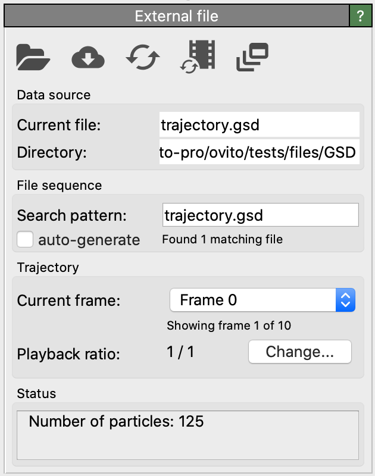
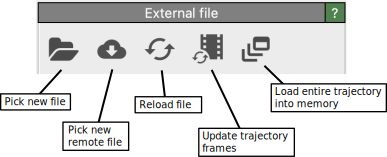
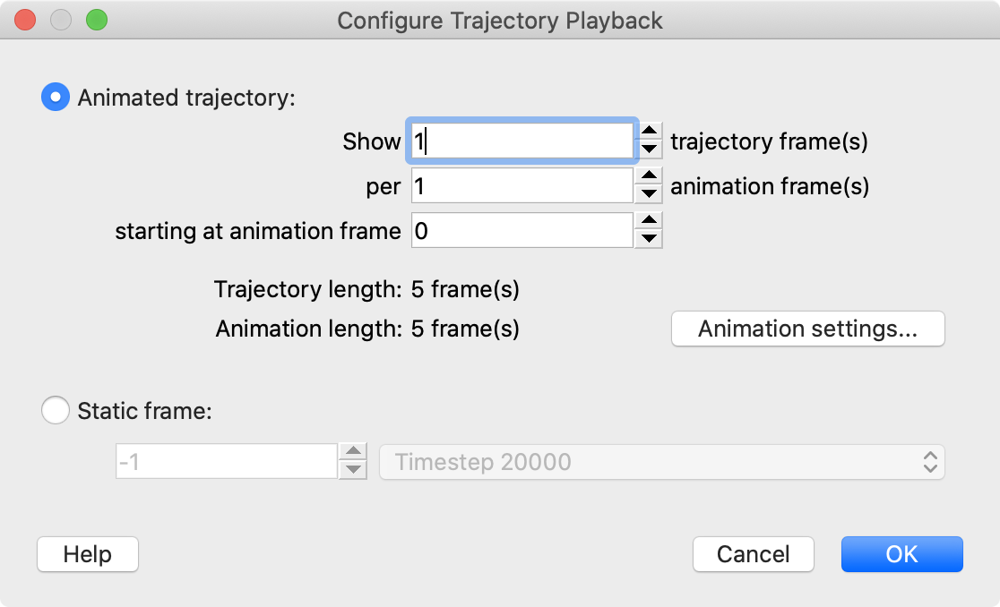

External file
{kind=link}
The “External file” panel lets you configure the parameters of the data source, in particular from which external file(s) the input data for the current data pipeline should be read. The panel is automatically displayed after you import a data file. via OVITO’s or menu functions. You can return to the panel at any time by selecting the topmost entry under the “Data source” section of the pipeline editor.
Supported file formats
The external file data source can read various file formats containing different kinds of data objects. Furthermore, the file export function of OVITO allows you to write the results of the data pipeline to disk in various output formats:
Toolbar functions
{kind=link}
- Pick new file
Selects a different data file on disk, which will subsequently serve as new input for the current data pipeline. All modifiers in the pipeline are preserved, but the input data they operate on gets replaced.
Note that OVITO is not going to detect whether the new file you’ve picked is part of a numbered file sequence in the same directory. You should manually check the auto-generate box if you want to load a numbered file sequence.
- Pick new remote file
Same as above, but lets you load simulation data from a new remote URL instead of picking a file in the local filesystem.
- Reload file
Refreshes the data for the current animation frame from the external file. This function is useful if the file contents have been updated or replaced, for example, after re-running a simulation or editing the file in an external program.
- Update trajectory frames
Refreshes the sequence of animation frames. OVITO will search the directory to find new files matching the filename pattern and/or rescan the loaded file to discover any new animation frames that have been appended to the trajectory file.
- Load entire trajectory into memory
This option lets OVITO load all frames of the current trajectory into memory to speed up access to the data or enable smooth animation playback in the interactive viewports. Note that you should make sure first that your computer has sufficient free memory to hold all trajectory frames. If this option is turned off (the default), OVITO holds only a single frame of the trajectory in memory at a time to reduce the memory footprint.
File sequence - Search pattern
This section allows you to specify a filename search pattern to load multiple files from the same directory as one trajectory. The search pattern must contain a single ‘*’ wildcard character, which will match any sequence of digits in a filename. All files matching the search pattern will be combined into one long trajectory, showing the contained simulation frames back to back. See also this section on how to import simulation trajectories.
OVITO automatically generates a default search pattern for you when importing a file with a number in its name. You can turn this behavior permanently off by unchecking the “auto-generate” option.
Trajectory - Playback ratio
After importing a new trajectory consisting of N simulation snapshots, OVITO will adjust the animation interval (which is shown as a timeline below the viewports) to the same length and show one trajectory frame per animation frame. Thus, there will be a one-to-one relationship between imported trajectory frames and rendered animation frames.
If desired, this standard 1/1 frame ratio can be changed by pressing the Change button, which opens the Configure trajectory playback dialog (see next section).
Configure trajectory playback
{kind=link}
This dialog lets you control how the series of snapshots from the loaded simulation trajectory is mapped to OVITO’s animation timeline. You can change the default 1:1 mapping to either a 1:n mapping, in which case each trajectory frame is replicated and rendered n times, or to an n:1 mapping, where only every n-th trajectory frame will be rendered.
A 1:n mapping is useful for stretching a simulation trajectory consisting of relatively few snapshots and rendering a longer movie. OVITO provides the Smooth trajectory modifier, which can be applied to compute new intermediate frames by interpolating the particle positions of successive frames from the input trajectory.
A n:1 mapping is useful if the loaded simulation trajectory consists of excessively many snapshots and you want to render a short movie showing the whole trajectory but having fewer frames.
The option Extract a static frame lets you take a single snapshot frame from the imported simulation trajectory and work with it in isolation in OVITO. This is useful for rendering a camera animation depicting an otherwise static model as shown in this tutorial.
See the advanced animations section to learn more about the difference between simulation and animation frames in OVITO.
See also
ovito.pipeline.FileSource(Python API)ovito.io.import_file()(Python API)